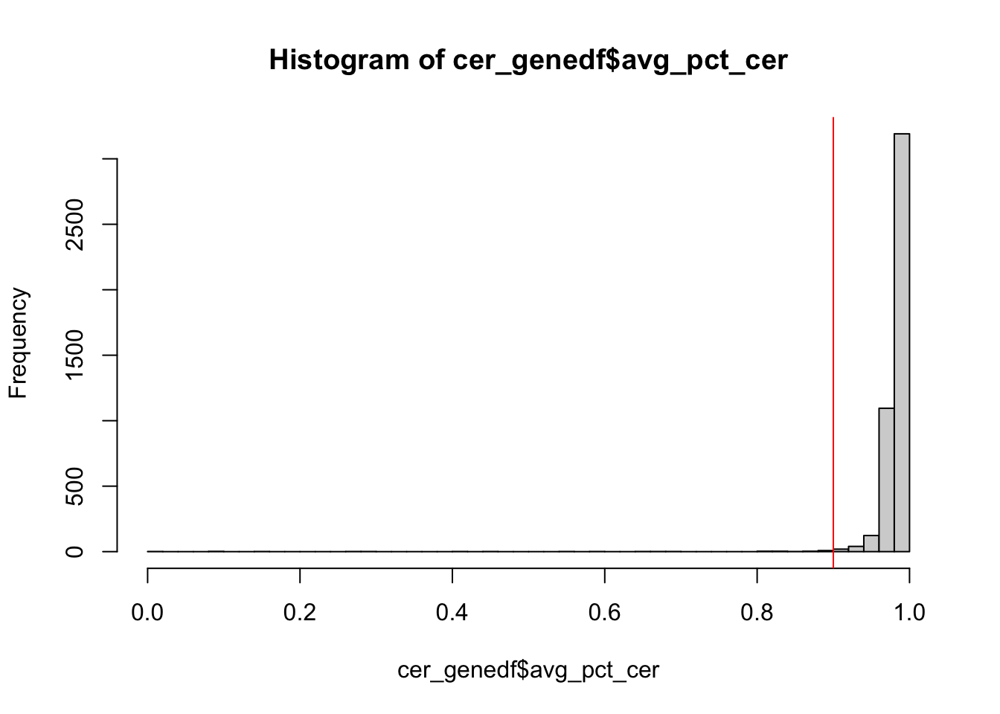
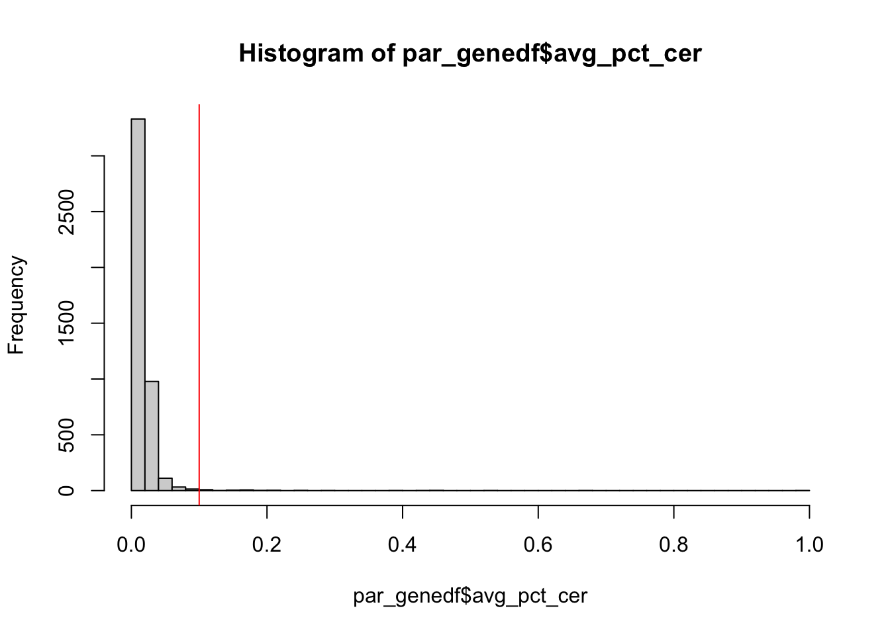
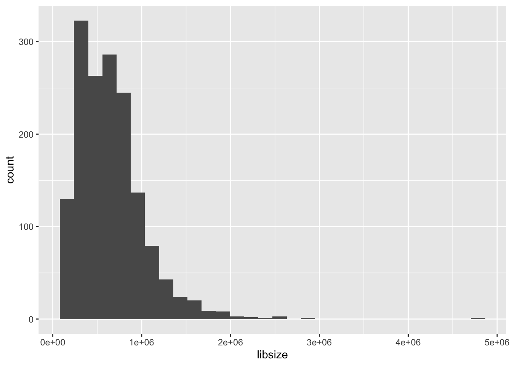
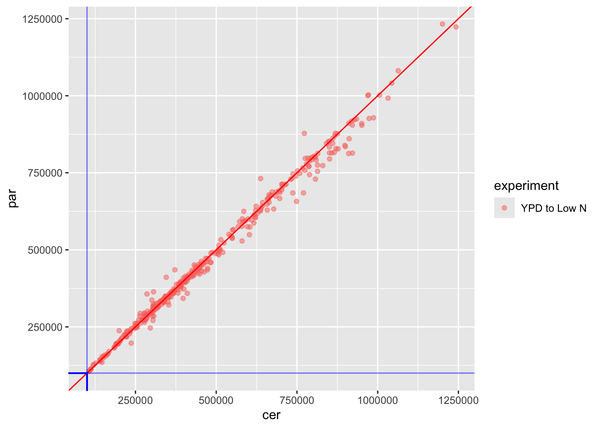

Here’s where we load the 3’ tagseq samples, normalize them, and assemble them into a single count matrix.
Working with RNAseq data published in Krieger et al. 2020
## dplyr readr tidyr purrr ggplot2
## TRUE TRUE TRUE TRUE TRUE
## ggpubr openxlsx matrixStats
## TRUE TRUE TRUEIn the parental samples, this means limiting to those reads that mapped to the “correct” parent’s allele: in Scer samples, we use Scer allele counts, in Spar samples, we use Spar allele counts. In the hybrid this means splitting allele reads into separate columns.
But before we do this, we should make sure there aren’t a lot of reads mapping to the “wrong” parent
Before we check percent mapping, we should filter out genes with very few reads total, as they’ll have highly variable percents based only on a few reads.
# normalizing function for filtering out lowly expressed
# genes prior to assessing mapping bias
# (used later to actually normalize count data)
# normalizing counts to adjust for differences in library size
# sums .cts_cer and .cts_par to get library size, only returns
# counts for specified allele
# @input: count matrix (genes are rows, columns are samples)
# @output: a count matrix normalzied for library size---integer counts in counts-per-million
countsPerMillionAllele <- function(.cts_cer, .cts_par, .allele) {
librarySizes <- colSums(.cts_cer, na.rm = TRUE) + colSums(.cts_par, na.rm = TRUE)
if (.allele == "cer") {
.cts <- .cts_cer
}
if (.allele == "par") {
.cts <- .cts_par
}
output <- apply(.cts, 1, function(x) {
normalized <- (x/librarySizes)*1e6
return(round(normalized))
})
return(t(output)) # For some unhinged reason, a vector output of apply across ROWS forms the COLUMNS of a new matrix
}
# tests for countsPerMillionAllele
test_cts <- tagseq_cer[,-1]
test_rowIdx <- sample(c(1:nrow(test_cts)), 1)
test_colIdx <- sample(which(grepl("cer", colnames(test_cts))), 1)
test_count <- test_cts[test_rowIdx, test_colIdx]
test_cpm <- countsPerMillionAllele(.cts_cer = tagseq_cer[,-1],
.cts_par = tagseq_par[,-1],
.allele = "cer")
((test_count/(colSums(tagseq_cer[,-1], na.rm = TRUE) +
colSums(tagseq_par[,-1], na.rm = TRUE))[test_colIdx])*1e6) %>%
round() # what it should be## GCR2_TP1_cer_P4C2_A2_G4_GS9a
## 1 0test_cts[test_rowIdx, test_colIdx] # what it is before using our function## # A tibble: 1 × 1
## GCR2_TP1_cer_P4C2_A2_G4_GS9a
## <dbl>
## 1 0test_cpm[test_rowIdx, test_colIdx] # what it is using our function## GCR2_TP1_cer_P4C2_A2_G4_GS9a
## 0Now we can calculate percent reads mapping to each allele in parental samples
# 1) normalize to counts per million based on total
# library size: cer reads + par reads regardless of sample organism
cpm_cer <- countsPerMillionAllele(.cts_cer = tagseq_cer[,-1],
.cts_par = tagseq_par[,-1],
.allele = "cer")
cpm_par <- countsPerMillionAllele(.cts_cer = tagseq_cer[,-1],
.cts_par = tagseq_par[,-1],
.allele = "par")
# 2) filter lowly expressed: < 30 cpm
sum(cpm_cer == 0 & cpm_par == 0)## [1] 246564isHighExpr <- (rowMeans(cpm_cer + cpm_par) > 30) |> sapply(FUN = isTRUE)
keep_genes <- common_genes[isHighExpr]
cpm_cer <- cpm_cer[isHighExpr,]
cpm_par <- cpm_par[isHighExpr,]
sum(cpm_cer == 0 & cpm_par == 0) # note there are still individual samples with zero counts## [1] 26069# 3) check % cer of all high-enough expressed genes is close to 1 for cer samples and 0 for par samples
plotdf <- bind_rows(bind_cols(tibble(gene = keep_genes,
allele = "cer"), cpm_cer),
bind_cols(tibble(gene = keep_genes,
allele = "par"), cpm_par)) |>
pivot_longer(cols = colnames(tagseq_cer[,-c(1,2)]),
names_to = c("sample_name"),
values_to = "count") |>
pivot_wider(id_cols = c("sample_name", "gene"),
values_from = "count", names_from = "allele",
names_prefix = "counts_")
plotdf$organism <- if_else(grepl("_cer_", plotdf$sample_name),
true = "cerSample",
false = if_else(grepl("_par_", plotdf$sample_name),
true = "parSample",
false = "hybSample"))
# Calculating % of reads mapping to the Scer allele
# for each gene/sample
# (So % Spar is 1 - % Scer)
plotdf$pct_cer <- if_else(plotdf$counts_cer == 0 &
plotdf$counts_par == 0,
true = NA,
false = plotdf$counts_cer/(plotdf$counts_cer + plotdf$counts_par))
plotdf <- drop_na(plotdf)
sample_genes <- sample(plotdf$gene, size = 100)
cer_genedf <- plotdf |> filter(organism == "cerSample") |>
group_by(gene) |>
summarise(avg_pct_cer = mean(pct_cer, na.rm = TRUE))
hist(cer_genedf$avg_pct_cer, breaks = 50)
abline(v = 0.9, col = "red")
par_genedf <- plotdf |> filter(organism == "parSample") |>
group_by(gene) |>
summarise(avg_pct_cer = mean(pct_cer, na.rm = TRUE))
hist(par_genedf$avg_pct_cer, breaks = 50)
abline(v = 0.1, col = "red")
As expected, genes from Scer samples have a high percentage of reads mapping to the Scer gene ortholog and vice versa for Spar.
Now we are ready to combine allele-specific counts into a single count matrix. To do this, we need to know which samples come from which organism, so we will first load our sample metadata.
# tagseq
# reading in sample info
sample_info <- read.xlsx("data_files/sample_metadata/bioSample1to999.xlsx", na.strings="not applicable", cols=c(1,4,9,13,14,15,17)) %>%
bind_rows(read.xlsx("data_files/sample_metadata/bioSample1000toEnd.xlsx", na.strings="not applicable", cols=c(1,4,9,13,14,15,17)))
colnames(sample_info) <- c("sample_name", "organism" , "collection_date", "genotype", "experiment","time_point", "well_flask_ID")
# removing samples not from LowN experiment
sample_info <- filter(sample_info, experiment == "YPD to Low N")
cat("All metadata samples are in counts matrix Scer:", all(sample_info$sample_name %in% colnames(tagseq_cer)), "\n")## All metadata samples are in counts matrix Scer: TRUEcat("All metadata samples are in counts matrix Spar:", all(sample_info$sample_name %in% colnames(tagseq_par)), "\n")## All metadata samples are in counts matrix Spar: TRUE# creating count matrix
counts <- apply(sample_info, 1, \(x) {
sample_name <- x["sample_name"]
org <- x["organism"]
if (!sample_name %in% colnames(tagseq_cer)) {
cat("missing sample", sample_name, "\n")
output <- matrix(NA, nrow = nrow(tagseq_cer), ncol = 1)
colnames(output) <- sample_name
return(output)
}
if (org == "Saccharomyces cerevisiae") {
return(tagseq_cer[,sample_name, drop = FALSE])
}
if (org == "Saccharomyces paradoxus") {
return(tagseq_par[,sample_name, drop = FALSE])
}
if (org == "Saccharomyces cerevisiae x Saccharomyces paradoxus") {
cer_countcol <- tagseq_cer[,sample_name]
par_countcol <- tagseq_par[,sample_name]
output <- cbind(cer_countcol, par_countcol)
colnames(output) <- c(gsub("_hyb_", "_hyc_", sample_name),
gsub("_hyb_", "_hyp_", sample_name))
return(output)
}
}) |> Reduce(f = cbind)
cat("All gene names are the same in combined count matrix and Scer count matrix:", all(rownames(counts) == rownames(tagseq_cer)), "
\n")## All gene names are the same in combined count matrix and Scer count matrix: TRUE
## cat("All gene names are the same in combined count matrix and Spar count matrix:", all(rownames(counts) == rownames(tagseq_par)), "
\n")## All gene names are the same in combined count matrix and Spar count matrix: TRUE
## # adding second row for each hybrid allele in info df
sample_info <- map(c(1:nrow(sample_info)), \(i) {
x <- sample_info[i,]
org <- sample_info[i,"organism"]
if (org == "Saccharomyces cerevisiae x Saccharomyces paradoxus") {
x_cer <- x
x_par <- x
x_cer["sample_name"] <- gsub("_hyb_", "_hyc_", x_cer["sample_name"])
x_par["sample_name"] <- gsub("_hyb_", "_hyp_", x_par["sample_name"])
output <- bind_rows(x_cer, x_par)
return(output)
}
if (org != "Saccharomyces cerevisiae x Saccharomyces paradoxus") {
return(x)
}
}) |> purrr::reduce(.f = bind_rows)
cat("All samples in the same order in count matrix and metadata:", all(colnames(counts) == sample_info$sample_name), "\n")## All samples in the same order in count matrix and metadata: TRUE# shorten organism names
sample_info$organism <- map_chr(sample_info$sample_name, function(s) {
if (grepl("_cer_", s)) {
return("cer")
}
if (grepl("_par_", s)) {
return("par")
}
if (grepl("_hy[pc]_", s)) {
return("hyb")
}
})
# add allele column
sample_info$allele <- map_chr(sample_info$sample_name, function(s) {
if (grepl("_cer_", s) | grepl("_hyc_", s)) {
return("cer")
}
if (grepl("_par_", s) | grepl("_hyp_", s)) {
return("par")
}
})
# removing space from genotype
sample_info$genotype <- gsub(" ", "", sample_info$genotype)
# converting timepoint to integer values of minutes
timepoint_to_int <- function(t) {
if (grepl("[0-9] h", t)) {
return(parse_number(t)*60)
}
else {
return(parse_number(t))
}
}
sample_info$time_point_num <- map_dbl(sample_info$time_point, timepoint_to_int)
colnames(sample_info) <- map_chr(colnames(sample_info), gsub, pattern = "^time_point$", replacement = "time_point_str") # time_point_str is the version that we'll use for DESeq2, so we can set a reference level (but we'll have to do that later)
# preserving sample information that is non-unique for replicates
sample_info$condition <- paste(sample_info$genotype,
sample_info$time_point_num, sep="_")
# In case you're wondering, the collection date is when RNA was collected,
# NOT when the living yeast sample was collected
# (only like 65 samples total have a collection date within 24 hours
# for all 3 samples, and that's mostly because a lot of samples were collected on those dates)
sample_info <- select(sample_info, !collection_date)
# Check for missing (NA) values
geneHasNAs <- apply(counts, 1, function(x) {
isNA <- sapply(x, is.na)
return(any(isNA))
})
sum(geneHasNAs) # should have 0## [1] 0# Exploring library sizes (un-normalized)
libsizes <- colSums(counts) # these counts include all samples, hybrid and parental
ggplot(tibble(libsize = libsizes), aes(x = libsize)) + geom_histogram()## `stat_bin()` using `bins = 30`. Pick better value with `binwidth`.
sort(libsizes)[c(1:20)]## GLN3_TP3_hyc_remnants_B3_C5_GS11 GLN3_TP3_hyp_remnants_B3_C5_GS11
## 105424 105759
## TEC1_TP2_hyp_H2_A2_D2_GS4 STB5_TP3_par_P4C2_G2_B3_GS10
## 106406 106623
## TEC1_TP2_hyc_H2_A2_D2_GS4 ARG81_TP2_par_remnants2_H2_F9_GS8
## 106797 108755
## RFX1_TP2_hyc_H2_C5_G8_GS4 HAP4_TP2_hyc_H2_C3_B6_GS4
## 111314 111562
## RFX1_TP2_hyp_H2_C5_G8_GS4 GZF3_TP2_hyc_H2_A6_D11_GS4
## 112245 112341
## HAP4_TP2_hyp_H2_C3_B6_GS4 GZF3_TP2_hyp_H2_A6_D11_GS4
## 112959 113398
## ACE2_TP3_par_remnants2_G1_A1_GS13 HAP5_TP2_cer_C3_E2_C6_GS8
## 114732 116276
## WT_TP2_par_P5_E2_G6_GS13 AFT1_TP2_hyc_P3H1_C6_H10_GS6
## 117042 118855
## ARG80_TP2_hyc_P3H1_H2_E3_GS6 RFX1_TP2_cer_C3_F4_G8_GS8
## 120618 122925
## AFT1_TP2_hyp_P3H1_C6_H10_GS6 MBP1_TP2_cer_C1_B4_C7_GS1
## 124823 125027No libraries under 100k reads, no need to remove small libraries prior to normalizing.
Are the hybrid library sizes correlated between hyc and hyp alleles?
plotdf <- tibble(sample_name = names(libsizes[grepl("_hy[pc]", names(libsizes))]),
libsize = libsizes[grepl("_hy[pc]", names(libsizes))]) |>
left_join(y = select(filter(sample_info, organism == "hyb"), sample_name, experiment), by = "sample_name")
plotdf$allele <- if_else(grepl(pattern = "_hyc_", plotdf$sample_name),
true = "cer", false = "par")
plotdf$sample_name <- gsub("_hy[pc]_", "_hyb_", plotdf$sample_name)
plotdf <- plotdf |> pivot_wider(id_cols = c("sample_name", "experiment"),
names_from = allele,
values_from = libsize)
ggplot(plotdf, aes(x = cer, y = par)) +
geom_point(aes(color = experiment), alpha = 0.5) +
geom_text(data = filter(plotdf, cer > par*1.5 | par > cer*1.5),
aes(label = sample_name), check_overlap = TRUE, color = "green") +
geom_abline(intercept = 0, slope = 1, color = "red") +
geom_rect(xmin = 0, xmax = 100000, ymin = 0, ymax = 100000, color = "blue", alpha = 0) +
geom_vline(xintercept = 100000, color = "blue", alpha = 0.5) +
geom_hline(yintercept = 100000, color = "blue", alpha = 0.5)
# (the samples within the blue box will be removed by our library size threshold below)
# and no other samples should be below the blue lines but not within the blue boxConclusion: yes, very correlated.
In tagseq data, 1 read = one mRNA molecule. So normalizing to counts per million is simply dividing the count by the library size * 1 million.
# normalizing counts to adjust for differences in library size
# @input: count matrix (genes are rows, columns are samples)
# @output: a count matrix normalzied for library size---integer counts in counts-per-million
countsPerMillion <- function(.cts) {
librarySizes <- colSums(.cts, na.rm = TRUE)
output <- apply(.cts, 1, function(x) {
normalized <- (x/librarySizes)*1e6
return(round(normalized))
})
return(t(output)) # For some unhinged reason, a vector output of apply across ROWS forms the COLUMNS of a new matrix
}
# tests for countsPerMillion
test_cts <- counts[,grepl("_par", colnames(counts))]
test_rowIdx <- sample(c(1:nrow(test_cts)), 1)
test_colIdx <- sample(c(1:ncol(test_cts)), 1)
test_count <- test_cts[test_rowIdx, test_colIdx]
test_cpm <- countsPerMillion(test_cts)
test_cpm_cpm <- countsPerMillion(test_cpm)
((test_count/colSums(test_cts, na.rm = TRUE)[test_colIdx])*1e6) %>% round() # what it should be## MIG1_TP2_par_P2_D2_D4_GS5
## 61test_cts[test_rowIdx, test_colIdx] # what it is before using our function## [1] 41test_cpm[test_rowIdx, test_colIdx] # what it is using our function## MIG1_TP2_par_P2_D2_D4_GS5
## 61test_cpm_cpm[test_rowIdx, test_colIdx] # what it is if you run cpm too many times (should be the same as test_cpm)## MIG1_TP2_par_P2_D2_D4_GS5
## 61Actually normalizing
counts_unnorm <- counts
counts <- countsPerMillion(counts)save(counts, counts_unnorm, sample_info, file = "data_files/CleanedCounts.RData")